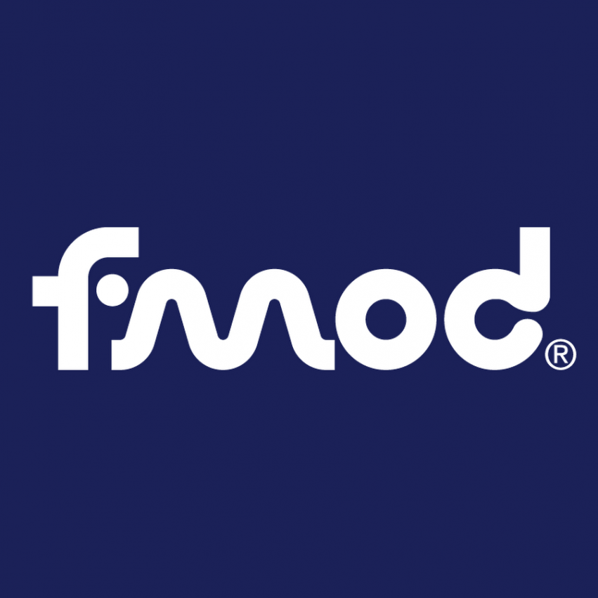
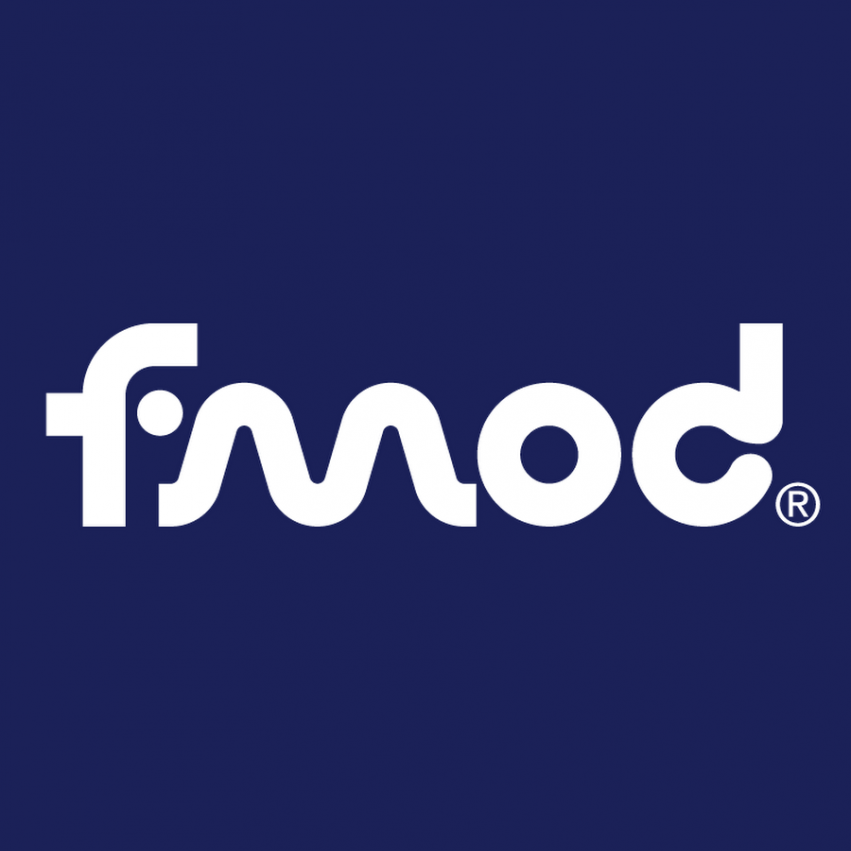

Demo
Welcome to the Hello World Demo of the crazy collaborative music experience,DJTable
a collaborative music experience for useless millennials who can’t actually play music.
Welcome to the Hello World Demo of the crazy collaborative music experience,DJTable
The goal of DJTable is to make a collaborative tabletop music experience for users through soothing music and synesthetic visual graphics.
Music has been proposed as psychological support for patients with low- and medium-grade depression. Therefore, the motivation of DJTable is to enable music creation even for people who cannot play any instruments.
DJTable is an abstract themed experience. The graphics are consist of two parts:
a) Each physical object on the table has its visual effects. A dial circle is shown that represents four different tracks of an instrument. At a specific distance between two or several objects, an exploding effect is shown which represents the fifth track.
b) A standalone space-themed visual experience is presented for the audience. The visual integrates with the music and creates pleasing visual experience.
The interaction with the tabletop is done through physical objects, i.e. fiducials. Each of the fiducials represents a specific instrument. A trackable tag is attached underneath.
To create a representation of each instrument, 3D physical objects are printed. The final shape of these physical objects was decided through the result of a survey that was posted on AGI19 Facebook group.
 



BLA BLA BLA

Miguel, the music composer, composed the sound of each instrument and tracks, using Ableton. Each instrument has four different sound at this moment. He also made graphics for the standalone screen. The standalone screen was built to let the audience enjoy the music with some graphics.